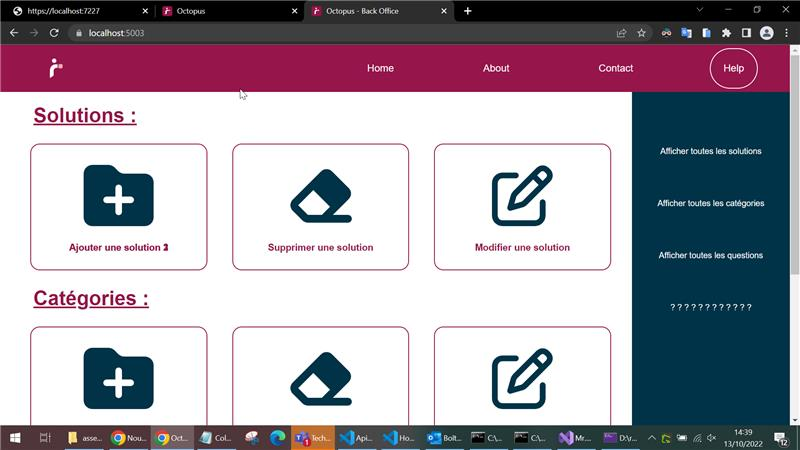

Behance
Gitlab
Louis Serrano
SIO Slam Alternance
Répondre aux incidents et aux demandes d’assistance et d’évolution
«
Participer à la valorisation de l’image de l’organisation sur les médias numériques en tenant compte du cadre juridique et des enjeux économiques
Respect de l'identité visuelle de Mondial Relay au sein des projets. Design soigné pour améliorer l'image de marque.
